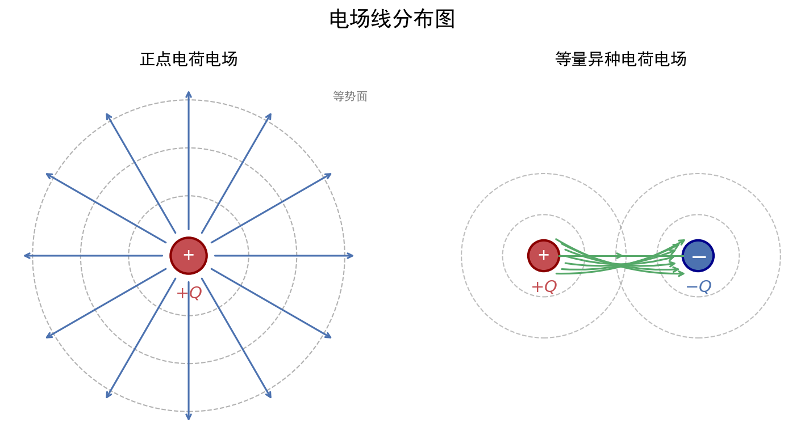

核心内容
关键概念
- 电场强度 $E$：描述电场力的性质的物理量，单位正电荷所受电场力
- 电势 $\varphi$：描述电场能的性质的物理量，单位正电荷具有的电势能
- 电势差 $U$：两点间电势之差，又称电压
- 电场线：形象地描述电场分布的曲线，切线方向表场强方向，疏密表场强大小
- 等势面：电势相等的点构成的面，与电场线垂直
核心公式/定理
1. 电场强度的三种求法
定义式：E = F/q（适用于任何电场，q为试探电荷）
点电荷场强：E = kQ/r²（仅适用于真空中的点电荷）
匀强电场：E = U/d（d为沿电场线方向的距离）适用条件：定义式普适；点电荷式要求真空；匀强电场式仅适用于匀强电场注意事项：E = F/q 中 q 是试探电荷，E 与 q 无关；E = kQ/r² 中 Q 是场源电荷
2. 电势与电势能
电势定义：φ = Ep/q（单位：V）
电势能：Ep = qφ
电势差：U_AB = φ_A - φ_B = W_AB/q适用条件：任何静电场注意事项：电势、电势能是标量，但有正负；正电荷在电势高处电势能大，负电荷相反
3. 电场力做功与电势能变化
电场力做功：W_AB = qU_AB = q(φ_A - φ_B)
功能关系：W_电 = -ΔEp = Ep_A - Ep_B适用条件：任何静电场注意事项：电场力做正功，电势能减小；电场力做负功，电势能增大
4. 电场线与等势面关系
电场线 ⊥ 等势面
沿电场线方向电势降低
电场线密处场强大，等势面密处场强大5. 常见电场模型
| 电场类型 | 场强特点 | 电势特点 |
|---|---|---|
| 点电荷 | E = kQ/r²，径向分布 | 正电荷：φ>0，近大远小；负电荷相反 |
| 等量异种电荷 | 连线：中点最小；中垂线：中点最大，向外减小 | 中垂线为零势面 |
| 等量同种电荷 | 连线：中点为零；中垂线：中点最大，先增后减 | 中垂线从中心向两侧先降后升（正电荷） |
| 匀强电场 | 处处相等 | 沿场强方向均匀降低 |

图：常见电场线分布示意图（点电荷、等量异种/同种电荷、匀强电场）
方法步骤
电场中粒子运动分析三步法
- 判断受力：$F = qE$，注意电荷正负决定力的方向
- 分析运动：直线运动（匀变速）或曲线运动（类平抛）
- 能量分析：只有电场力做功时，$Ek + Ep = 常数$
匀强电场中电势计算技巧
- 找等势点：线段中点电势 = (两端点电势和)/2
- 等分法：等长线段电势差相等
- 作图法：连接等势点 → 作垂线得电场线方向
记忆口诀/技巧
场强方向口诀：正电荷受力方向为场强方向，负电荷相反。电势高低口诀：沿电场线方向电势降低，正电荷在高电势处电势能大。
广东情境提示：广东卷常考带电粒子在电场中的偏转（示波器、喷墨打印、静电除尘等科技情境），注意从情境中提取 $E$ 的方向和 $d$ 的取值。
关联卡片
- 磁场公式体系 — 电磁场综合时联合使用
- 电磁感应定律 — 电场与感应电场关联
- 广东物理情境化命题专题 — 广东卷电场情境题提取方法
备注
- 广东卷电场题常结合科技情境（如电容式传感器、静电纺丝），审题时注意提取物理模型
- 等势面与电场线垂直关系是作图题关键
- 电势正负取决于零势点选取，但电势差与零势点无关
- 电场叠加遵循矢量合成法则（平行四边形定则）